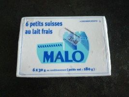

旅行するだけならあまりお世話になることはないかもしれませんが、長く生活することになると必ずお世話になるのが近所のスーパーマーケットですね。 ここパリでも例外なくいろんなチェーンのスーパーがあります。このぺージではそんなスーパーについてご紹介。
パリ市内でよく見かけるスーパーといえばMONOPRIXモノプリ。地域によって大きさやそろって いるものが異なりますが、一般的に他のチェーン店に比べて大きなお店です。

ＭＯＮＯＰＲＩＸ モノプリ
農業国野菜を食べよう
まず一番最初に買い物に出かけた日の最初の発見は、野菜コーナー。こちらでは袋売りではなく計り売りで、例えば、自分で必要な分のジャガイモを袋に入れ て、そばにある計り機でジャガイモの絵を押すと料金のバーコードが出てきます。そのステッカーを袋にはりレジにて支払うという具合です。ですからニンジ ンが一本だけ欲しいという時は、3０円、4０円単位で買うことができます。もやしやマッシュルームなんかをわしづかみに袋に詰めたりするんですよ。
他にもこちらならではのユニークな野菜がたくさん。新鮮なバジルやアーテイチョークなど。アボカドが山積みになっていたり。どうやって料理したらいいのか分からないようなものがたくさん。でもさすがは農業国安いです。
Mache という野菜はレタスとまぜてサラダに。またRoquetteという野菜は ほろ苦くて大好きです。スーパーで探してみてください。
日本らしいものといえば、椎茸がこちらでも《シイタケ》として売られていました。もちろんスーパーでなく八百屋さんに行けばさらに新鮮な野菜やハーブなどが手に入ります。果物類ではベリーの種類が豊富でいろんな味が楽しめます。
.html)

Cerisesと書いてあるプチトマト。とても甘くておいしい。
モノプリで買ったバジルは、鉢植えで売っていました。
一鉢で何回も葉をつけてくれるので、結構楽しいです。
BIO食品については日記にて。
お肉とチーズ
フランスでは、レストランの食事は日本の料金とさほど変わらないけれど、スーパーの野菜や肉類などはとても安く、家で料理するととても経済的。チーズやワインも種類が豊富で、とても安い。レストランに行かなくてもスーパーでフランス料理が楽しめそうです。
ずらりと並んだチーズのコーナーは独特の匂いがしてきて、いい時と悪い時が・・・。私のおすすめは Cancoillote〈カンクワイ ヨット〉 というチーズです。クリーミーでしかもとても安い。１ユーロちょっとの値段で味わえるチーズです。
食べ方というと、フライパンでそのチーズを温め、ハムやフライしたポテトにかけて食べます。フランスでもまだ珍しい方のチーズなんだそうです。うちはたまたま彼の友達がそのチーズの産地出身でいつもお土産にもらっていたのでおいしいねと言いながらよく食べていました。スーパーには一種類しかありませんでしたが、実はガーリックカンクワイヨットがおいしいんですよね。
（「フランス家庭 料理」もご覧下さい。）
.html)
PresidentというブランドのCancoillote
このトローッとしたチーズをパンやハムに付けて食べるんです。
.html)
こちらもPresidentのカマンベールチーズ。
私達のお気に入りです。
ちょっと指で押さえて弾力のあるものを選ぶのがコツ。
もちろんワインともとても合うので、お忘れなく。スーパーの中には、ワインのコーナーもあり、いまだに何がなんだかさっぱり見当がつか ないほどたくさん揃っています。きっとこちらではワインは日本人のお茶のようなものなんだろうなと感じます。
お肉もステーキがいろいろ並んでいます。こちらに来てから胃が大きくな りました。ハムなどもフランスのいろんな地域特産のものが売られていて、結構おいしいんです。おすすめはＳＡＶＯＩＳサヴォワ地方の生ハム。香りも良くワインとよく合います。スーパーで買ったのに。
.html)
PARMA（左） というブランドの生ハム。
いろんな地方の名前が書いてあるのでチェックを。
Savoiｓサヴォア地方のが中でもお勧めです。
.html)
Fleury Michon （左） Basquaise バスケーズハム。
我が家のある日の朝食。
プロヴァンスハムもありました。おいしいですよ。
.html)
CHARAL（右）というブランドでマリネしてあるステーキ。
そしてかなり手抜きな食事です。でもおいしい。


Le Gauloisブランドの Gesiers de Canard
Gesiers ジェジエとは砂肝。つまりカモの砂肝。
日本と違ってものすごーくやわらかい。
フライパンで少し暖めてサラダと混ぜて食べています。
おいしいですよ！お試しあれ。5,24ユーロ。
.html)
Pâté en Croute （右）ランチにもちょうど良い。

Roulade de Volaille cuite aux olives
モノプリブランドのオリーヴハム。

Labeyrie こちらはスモークサーモンやフォワグラで有名なブランド。
たくさん買ってマリネにしたりします。作り方はフランス家庭料 理。

Knorr（左） こちらおなじみクノールのスープ。
キノコスープ、アスパラガスのスープ。
日本にもあるのかな？

Knorr クノールの地中海ブイヨン（野菜用）
かなり便利です。
我が家では、ナス、クルジェット（ズッキーニ）、パプリカをさいの目に切り、このブイヨンで炒めて出来上がり。地中海野菜炒めですね。

Blinisブリニ（左） / Taramaタラマ（右）
スーパーの魚介類売り場近くでみつかります。
粒々のイクラの入ったクリームを小さなパン（ブリニ）にぬって食べます。
その他お菓子など
.html)
こちらはシュー皮に砂糖がまぶしてあるおやつ。お茶に合います。
.html)
お茶に合うといえば、こちらはBonne Maman（左）というシリーズのお菓子。
チョコレートやジャムがおいしいです。
.html)
Les pyreneens （右）冬季限定チョコレート。
買いだめしておきましょう。

そしてこちらBonne Mamanの新商品。
Les Petits Muffins
バターの香りと味がしっかりついていて、とってもおいしい。
コーヒー味もおすすめ
.html)
VAN HOUTEN （左）
そして冬にはか欠かせないココア。
カフェに行かなくともこれで十分。

LA TISANIERE （Nuit Calm) （右）
またリラックスしたい時、眠れない時にこんなハーブティーはどうでしょう。香りがとってもいいです。ほんのり甘みがあって。

BJORG BIOのクッキー。
朝食にしています。 主人はハチミツ、私は写真左のハチミツパン。フラボーワーズもおすすめ。

Petits Choux Fourres
MONOPRIXブランドのおかし。
さくさくのシュー皮の中にTapenade（プロヴァンス名産）。
オリーブの味が口にいっぱい。ワインと一緒に。

こちらLeader price というブランド。結構安くておもしろいものが見つかります。プロヴァンスのリンゴジュース

こちらその名もVaisselle Mediterranee
「地中海食器洗剤」何が地中海なのかと言うと、香りが地中海です…???

Grand Fermage Sel de Mer
日本にいた時はマーガリンが多かったけれどこちららに来たらバターの多さに驚きます。安いし。こちらは海の塩入りバター。

St Malo petilts suisses
プチスイス＝クリームとチーズの間？つまりクリームチーズみたいな感じでしょうか。いくつかメジャーなブランドのプチスイスがありますが、こちらSt Maloは伝統的な製法で作られているとか。おいしい！
と、このように、スーパーは発見の宝庫。フランスの暮らしがよく分かります。フランスを旅行する時は、アパートなどを借りて自分で料理 をしたほうが楽しいかもしれませんね。 結構おもしろいものがたくさんあってチャレンジしてみるのもいいかも。それからこちらには24時間営業するようなコンビニはありません。

最後にＰＲＯＭＯプロモとは割引商品です。
ただ、フランスのスーパーは、かなり衛生管理が悪いので、季節の変わり目などにはこういったプロモ商品も含め気をつけましょう。賞味期間が過ぎていなくても、温度調整が適切になされていないのでお肉などが変色し腐っている場合がよくあります。特に中身の見えない商品などは要注意。